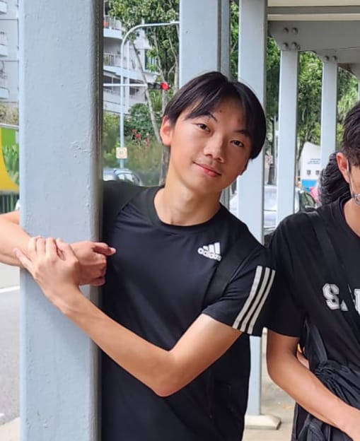
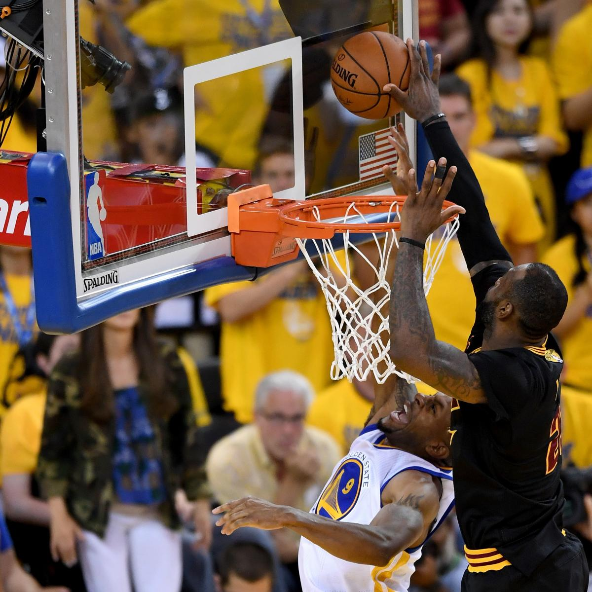

Know More About Me
Introduction

I am Tee Lin Kai. I currently lived in the North side of Singapore. I'm an active person who enjoys playing sports,
such as basketball, and exercises sometimes. I also enjoy playing online games, such as Valorant, if I want to be
lazy all day.
It may be a surprise but I was once a vice-captain for my Cross Country CCA in Evergreen Secondary School.
My team managed to achieve some success, like placing 5th for "NSG B division Boys" race in 2022 & 2023 and 3rd for
2023 "Wings Race B division Boys" race. Also, I have led a VIA project in secondary 4 to carry out stretching
exercises and origami session for the elderly who has Alzheimer's disease at Sree Narayana's Mission Nursing
Home.
My Values
"I can accept failure, everyone fails at something. But I can't accept not trying." - Michael Jordan
I believed that it is important to do my best for whatever I am doing, especially at things I have passion and love for. It might end up as a success, it might end up as a failure as well. The chances of achieving success is low, but I know I have tried, and it was my best. Michael Jordan's inspirational quote, once shared by my Cross Country coach, still continues to inspire me to keep on trying despite the obstacles.
My Personality
I'm optimistic, joyful and happy-go-lucky guy. I'm an introvert towards strangers but more of an extrovert towards my friends. I'm supportive towards my friends as well, hoping for the best for them.
My Interests

One of my hobbies is definitely basketball. The game has simple rules but many ways to play. You can excel
in different areas of the sport (Shooting, Dribbling, Passing, Finishing...) which allows you to play in
any way you like. My favourite part is shooting the basketball as it makes me feel that I can contribute
to the team just by scoring, even though I'm still lacking in other aspects. Basketball is only at its best
when I can play with my friends, or even strangers. I'm able to have fun with them ,regardless of winning and
losing, and learn where and how to improve at the same time.
I do love watching NBA games as well. The NBA players make it looks easy to just play basketball at the highest
level, especially Lebron James. Ever since I witnessed his way of playing in the 2016 NBA Finals, I grew the
thoughts of playing basketball. Of course, I'm no where near his level, but I'm able to discover this sport
because of him. Up till today, I still watch him play as his years in the NBA diminishes.